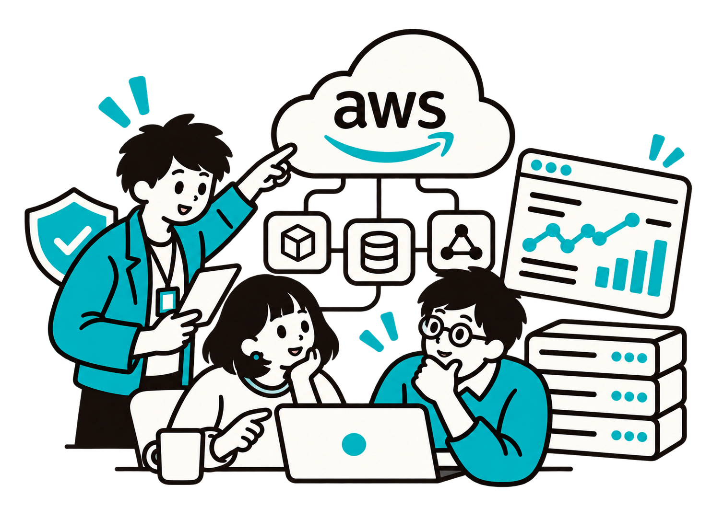

システム運用の見直し・最適化を行いたい
現状の運用を整理し、効率化と安定性を高めたい。

社内外にシステム・サービスをご提供している事業者様へ
現状の運用を整理し、効率化と安定性を高めたい。
現場の負担を軽減し、安定した業務継続を確保したい。
AWS運用・保守の専門知識を活かした安定運用を求めている。
―― FEATURES ――
1000台以上
の環境を手がける豊富な実績と経験でお客様のシステムを支えます
― 01
豊富な経験と実績を持つエンジニアがお客様の課題解決に向けたプランニングを行います。安定・安全はもちろんのこと、期間やコストなど事業観点の課題もお気軽にご相談ください。
― 02
スピード対応が求められるクラウド環境のトラブル。ユニメディアはあらゆるトラブルに迅速に対応しサービスの安定稼働を支えます。フルサポートだけでなく監視・連絡のみの一部工程のサポートも承ります。

― 03
多機能ながら運用難易度が高いAWS。弊社は多くのAWS上で運用されているシステムをサポートしており、日々の保守はもちろん設計の見直しや最適化などもお任せください。
―― SERVICES ――
必要な範囲だけを柔軟に
お客様の運用体制に合わせてご提供します
― 01
お客様が運用されている日々のサービスが止まることが無いよう、各種監視ツール、クラウドの通知サービス、エンジニアによる定期的な目視確認などを通し、死活監視、リソース監視、ジョブ・プロセス監視を実施します。
― 02
監視により各種エラーを検知後、エンジニアが早急な調査の上で臨機応変かつ迅速な復旧対応を実施します。
― 03
クラウド事業者から提供される情報を基に、必要に応じて事前にサーバー再起動などの対応を行い、サービスへの影響を最小限にとどめます。ほか、メンテナンス告知ページのアップロードや、事前バックアップの取得も可能です。
― 04
お客様のサービスにおけるセキュリティ上の問題に対応するため、必要に応じて情報提供を行い、OS・ミドルウェアのアップデートの提案および支援を行います。
―― PLAN MENU ――
最適なプランを
お客様の環境と運用体制に合わせてご提案します
Webサイトや静的なLPの定期監視に最適です。
サーバー死活監視とログエラー監視を追加した、運用の基本形です。
障害対応と運用支援を含めた、安心のマネージド運用です。
| サービス内容 | 監視プラン -ライト- | 監視プラン -ベーシック- | 監視＆運用プラン |
|---|---|---|---|
| 【監視業務】 | |||
| 外形監視 弊社監視システムからWebサイトやECサイトのURLを定期的に監視し、ウェブの死活や応答時間を確認し続けます。 | |||
| 内部監視 サーバーCPU、メモリー等の性能をサーバー内部から監視します。プロセス数やプロセスの死活監視、お客様指定のログに出力される特定文字列の監視も可能です。 | — | ||
| 【有事対応】 | |||
| エスカレーション 監視において異常を検知した場合、あらかじめ取り決めた連絡手段にて内容をご連絡いたします。 | |||
| 切り分け サーバーのログやコマンド、ダッシュボードの視認等から、異常箇所の特定を行います。 | — | ||
| 一次対応 取り決めた一次対応手順を基に復旧対処を実施します。 | — | — | |
| 【運用保守】 | |||
| 計画作業 クラウドのメンテナンスやバックアップの取得等の計画作業を実施いたします。夜間や日中の対応などの時間調整も可能です。 | — | — | |
| 外形監視 | ||
| カテゴリ | 項目 | 詳細 |
|---|---|---|
| ・Web画面 | ステータス監視 表示監視 | HTTPステータスコード監視 ページに含まれる文字列監視（HTML文字列監視） |
| ・API監視 | ステータス監視 | HTTPステータスコード監視 |
| サーバー内部監視 | ||
| カテゴリ | 項目 | 詳細 |
| ・ポート監視 | 指定ポート | 指定したポートを監視 |
| ・Ping監視 | 死活監視 | ICMP応答などの監視 |
| ・プロセス監視 | プロセスのプロセス数監視 プロセス死活監視 | 特定プロセスの死活監視 特定プロセスのプロセス数監視 |
| ・リソース監視 | 性能監視 | CPU使用率、メモリ使用率等の監視 ※監視間隔や閾値は個別に設定 |
| ・ログ監視 | 特定文字列監視 | 指定したログ内の特定文字列を監視 |
| エスカレーション | ||
| カテゴリ | 項目 | 詳細 |
| ・切り分け | 障害箇所特定 | 監視通知からのエラー内容切り分け |
| ・連絡 | 連絡の実施 | 取り決めた連絡網への連絡の実施 |
| サーバー定型作業 | ||
| カテゴリ | 項目 | 詳細 |
|---|---|---|
| ・計画作業 | 手順に沿った作業 |
・クラウド基盤のメンテナンスに伴うサーバー再起動 ・バッチ処理実行、結果確認 ・定期的なバックアップ及び復旧 ・サーバーの台数増減及びスペック変更 ・OS環境設定の変更 ・ミドルウェアの設定変更 |
| ・アップデート | セキュリティアップデート | ・脆弱性情報の提供とアップデートの支援 |
| 緊急時対応・障害時対応 | ||
| カテゴリ | 項目 | 詳細 |
|---|---|---|
| ・切り分け | 障害箇所特定 | 監視通知からのエラー切り分け |
| ・対応 | 一次障害対応 | ・次手順書を用いた障害復旧対応作業の実施 関係者へのエスカレーションの実施 |
| ・連絡 | 連絡の実施 | 取り決めた連絡網への連絡の実施 |
| 外形監視 | ||
| カテゴリ | 項目 | 詳細 |
|---|---|---|
| ・Web画面 | 表示監視 | 表示崩れ等のページ監視 ※ページのスナップショット比較 |
| ・API監視 | ステータス監視 | API応答内容の詳細監視 |
監視・障害対応・運用支援・アップデートを一括でご相談ください。AWSなどのクラウドサーバーをはじめ、VMware、オンプレミス環境など、さまざまな環境での構築実績があります。オンプレミスからクラウド、クラウドからクラウドへの移行も対応可能です。
お問い合わせ―― CASE STUDY ――
実際の導入効果を
お客様の声とともにご紹介します
夜間や休日も更新するウェブメディアを運営しています。
担当者の負担、そして障害発生時の対応の遅れが課題でしたが
ユニメディアのシステム運用保守サービスで解消されました。
自社のECサイトは高負荷時にダウンし機会損失が発生していました。
運用保守に加えてサーバー環境の見直しもご提案いただき、
落ちづらく、落ちても復旧の早いサイトになりました。
所有しているサービスサイトの運用保守業務で自社エンジニアの工数が圧迫。
ユニメディアのサポートのおかげでエンジニアが再び本来の開発業務に専念できるようになりました。
―― FLOW ――
お客様の課題に寄り添いながら
システム運用・保守を行います
— 01

運用対象のシステムに関する要件を明確にし、ご提案準備をいたします。
— 02

ヒアリングの内容を基に、方針・要件・ご予算を明確にした最適なプランをご提案いたします。
— 03

ご提案内容に沿って監視設計などを実施し、承諾を持って初期対応を実施いたします。
— 04

受領した一次対応手順のテスト、監視発報のテストを実施いたします。
— 05

本格的なサービス提供後はお客様からのフィードバックを基に改善を継続して実施いたします。
―― FAQ ――
―― CONTACT ――